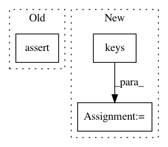

a94dbd2936fdc64e921333c04e0d66d491efc706,src/spn/algorithms/stats/Moments.py,,Moment,#,29
Before Change
if evidence_scope is None:
evidence_scope = set()
assert not (len(evidence_scope) > 0 and evidence is None)
assert len(feature_scope.intersection(evidence_scope)) == 0
marg_spn = marginalize(spn, keep=feature_scope | evidence_scope)
After Change
node_moments = {Sum: sum_moment, Product: prod_moment}
for node in node_moment.keys():
try:
moment = node_moment[node]
node_ll = node_likelihoods[node]
except KeyError:
raise AssertionError("Node type {} doe not have associated moment and likelihoods".format(node))
node_moments[key] = leaf_moment(moment, node_ll)
if evidence is None:
// fake_evidence needs to be computed
evidence = np.full((1, len(spn.scope)), np.nan)
In pattern: SUPERPATTERN
Frequency: 3
Non-data size: 3
Instances
Project Name: SPFlow/SPFlow
Commit Name: a94dbd2936fdc64e921333c04e0d66d491efc706
Time: 2018-11-19
Author: claas@voelcker.net
File Name: src/spn/algorithms/stats/Moments.py
Class Name:
Method Name: Moment
Project Name: okfn-brasil/serenata-de-amor
Commit Name: 493bfda08b8e6fb3ebf9cdcde224f91058fde9a4
Time: 2017-05-22
Author: cuducos@users.noreply.github.com
File Name: rosie/federal_senate/tests/test_adapter.py
Class Name: TestAdapter
Method Name: test_renamed_columns
Project Name: tensorpack/tensorpack
Commit Name: e68eec29ab5d7d58cf88068b1211d0fe6a1df904
Time: 2019-09-04
Author: ppwwyyxx@users.noreply.github.com
File Name: scripts/dump-model-params.py
Class Name:
Method Name: